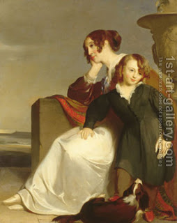

Bava Kamma 71 - A Son and his Mother Who is a Harlot

If a son cohabits with his mother who is a harlot, promising her a sheep, that sheep may not be brought as a sacrifice . She can't sue him for the sheep in court, because of "one is subject only to the greater (death) penalty," so their deal is invalid, but the prohibition takes effect.
If one stole an ox of two partners and then admitted his liability to one of them, - he doesn't pay a fivefold payment to him, but does he pay half of it the other partner? Rav Nachman said, "No! Five oxen and not five half-oxen!" but the next morning he admitted he erred due to fast.